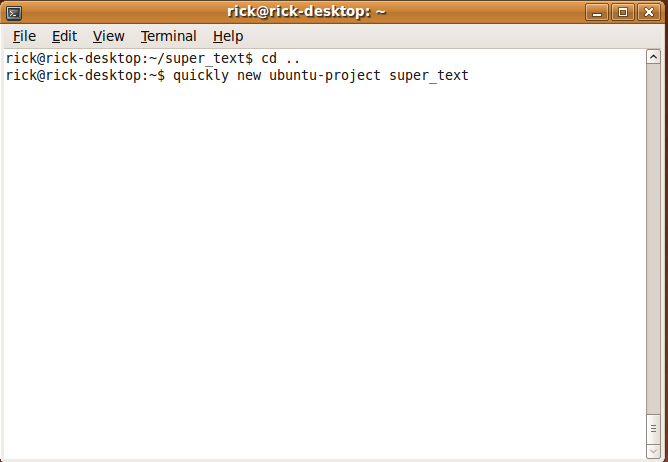
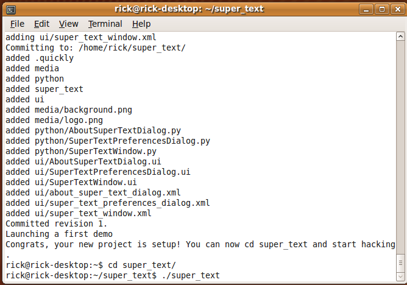
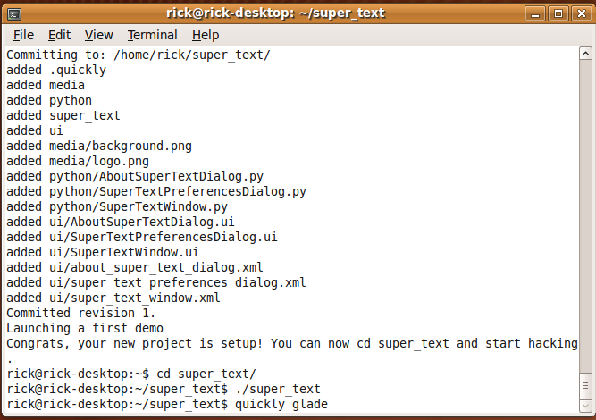
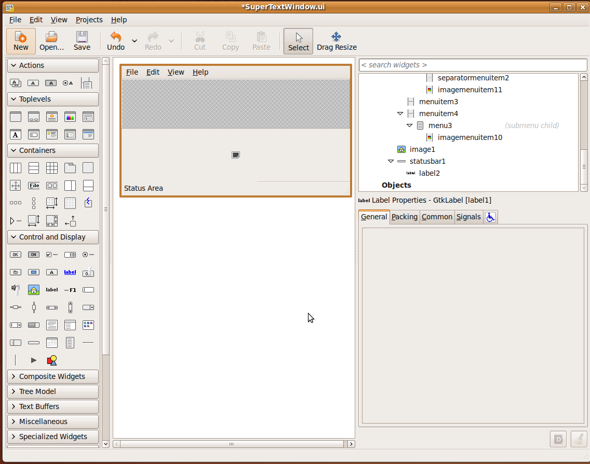
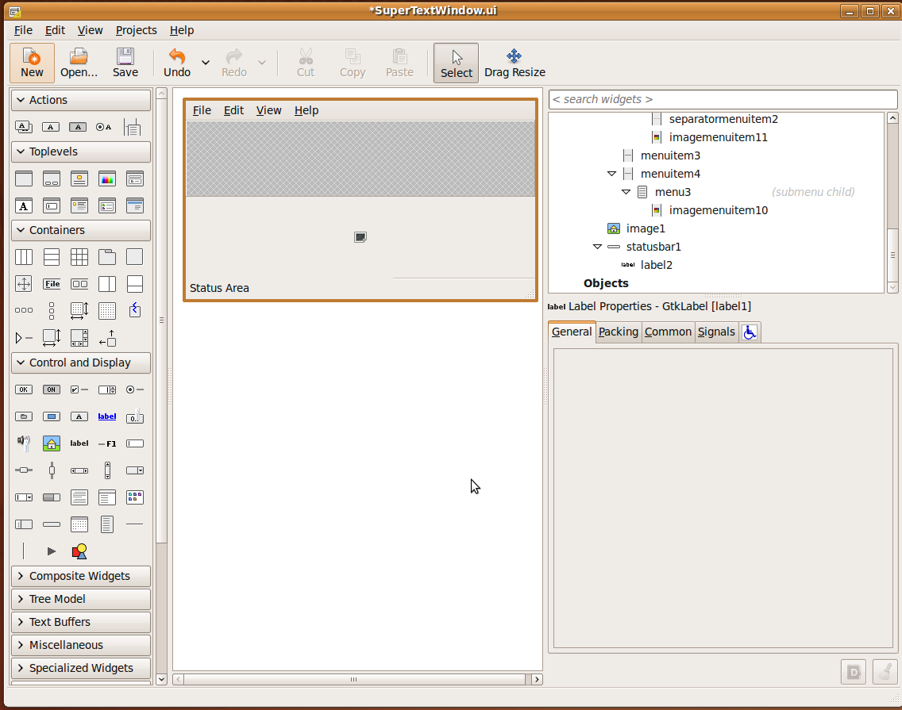

What is Quicly
Installing Quickly
The Goal Project
Creating a Quickly Project
Creating the Empty Project
Creating an empty but working program couldn't be simpler. First, open a terminal window to type commands into. When it's open, type the command:
$quickly new ubuntu-project super_text

This will create a super_text sub directory containing a complete directory tree and files for an empty python appliction. The command finishes by running the newly created empty application.

Testing the Empty Application
The are populated and set up, and you can resize the window. Notice that quickly interfered that the application title is "Super Text". Only a few of menu items do anything in the empty application, Help->About, Edit->Preferences, and File->Quit.

Running the Applicatin
Close the application by closing the window or using the Quit command. Since the empty application isn't installed into Ubuntu yet, you can't start the application from the application menu yet. To start the applicaton, use the terminal to first cd into the new subdirectory, and then issue the command to start the program.
$cd super_text
super_text$./super_text

Edit the User Interface
Quickly programs use Glade to edit the user interface. Start Glade with quickly in order to set up Glade for editing the empty applicaton.
super_text$quickly glade

Glade will open with the project loaded up and ready to edit.
 Use the Project Menu to choose "SuperTextWindow.ui" for editing.
Use the Project Menu to choose "SuperTextWindow.ui" for editing.
 We want to create a text area for typing into. There are some default Widgets added to the Window. We won't need these so we'll start with deleting them. Click on the label, and press delete, and it will disappear from the window.
We want to create a text area for typing into. There are some default Widgets added to the Window. We won't need these so we'll start with deleting them. Click on the label, and press delete, and it will disappear from the window.
 
Do the same with the image widget.
This leave us two free slots.

Do the same with the image widget.
This leave us two free slots.
 We'll use the bottom slot to add a TextView widget for the user to type into. In the toolbox, click on the TextView widget. Then click in the empty slot.
We'll use the bottom slot to add a TextView widget for the user to type into. In the toolbox, click on the TextView widget. Then click in the empty slot.
 Make sure you save the file in Glade, or your changes won't take! Then run the application from terminal again. The window now has a place where the user can type.
Make sure you save the file in Glade, or your changes won't take! Then run the application from terminal again. The window now has a place where the user can type.

Add Saving Capabilities
2. Open it
a. quickly glade
b. switching projects
c. add a text view
d. respond to the save command
e. save the file
f. respond to the open command
g. load the file
h. respond to the new command
i. clear it out
3. Save your work
1. commit it
2. create a launchpad account
3. push it
4. pull it
4. package it
1. edit setup.py
1. quickly package
2. run the deb
3. try it out
4. Make a PPA
1. already editted setup.py
2. already have a launchpad acocunt
3. quickly release